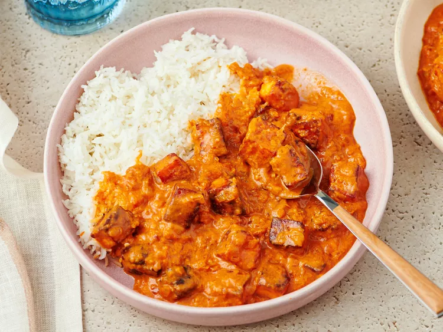
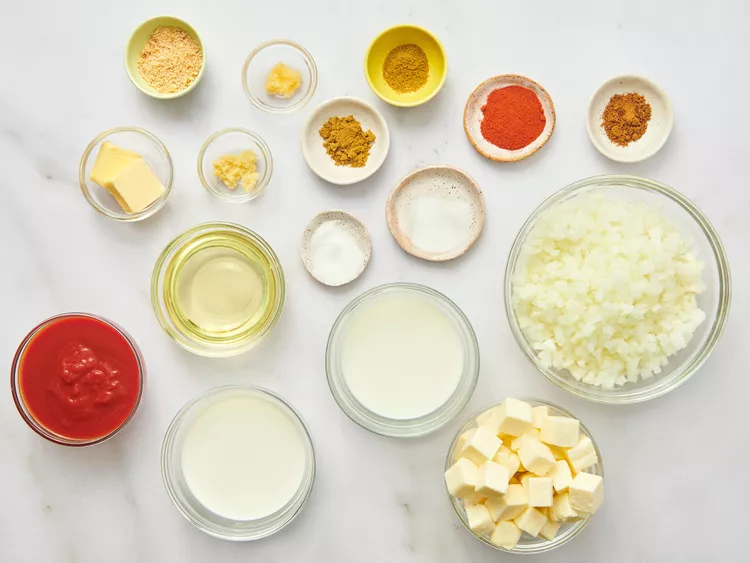
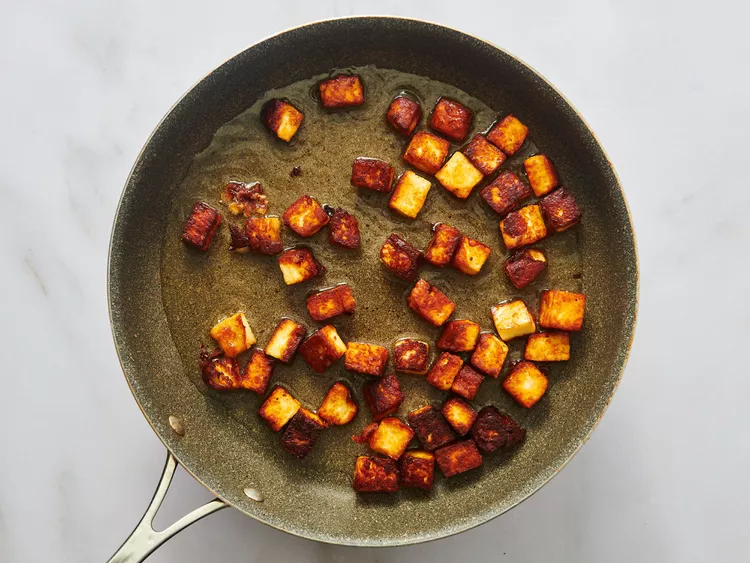
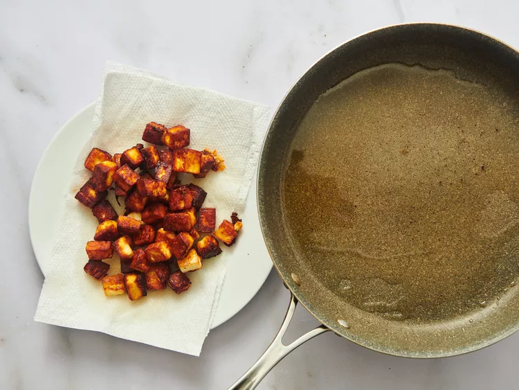
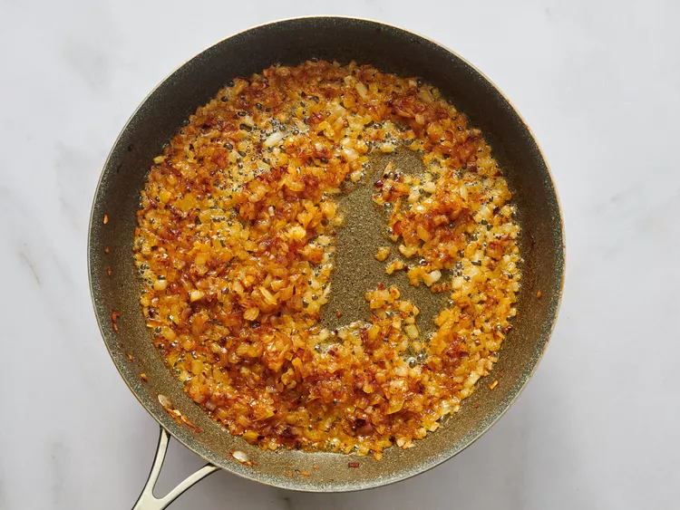
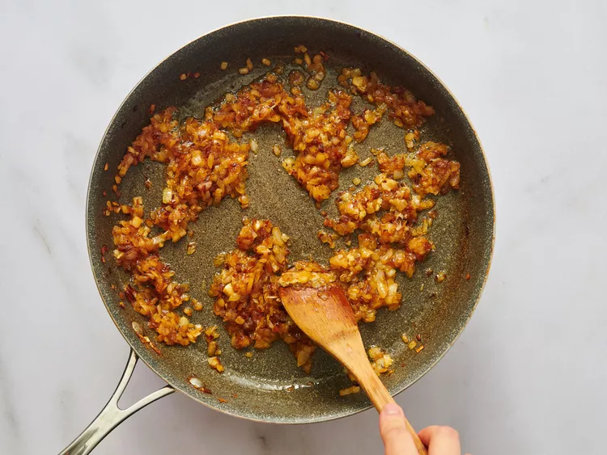
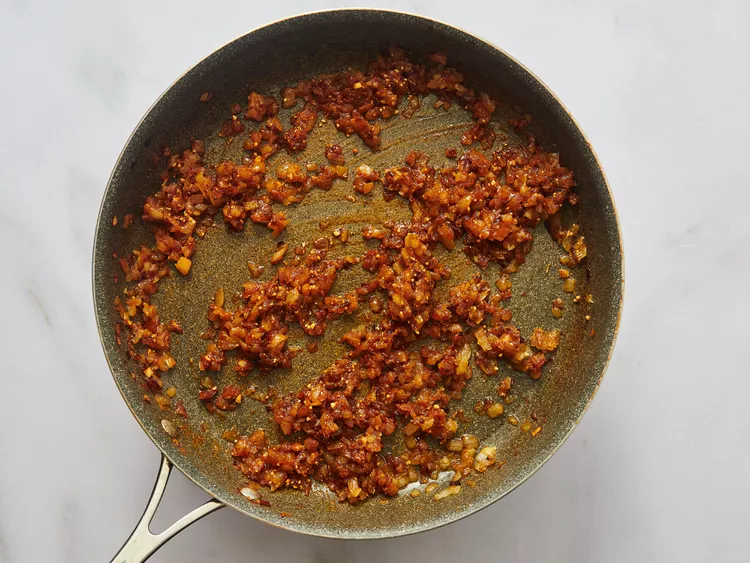
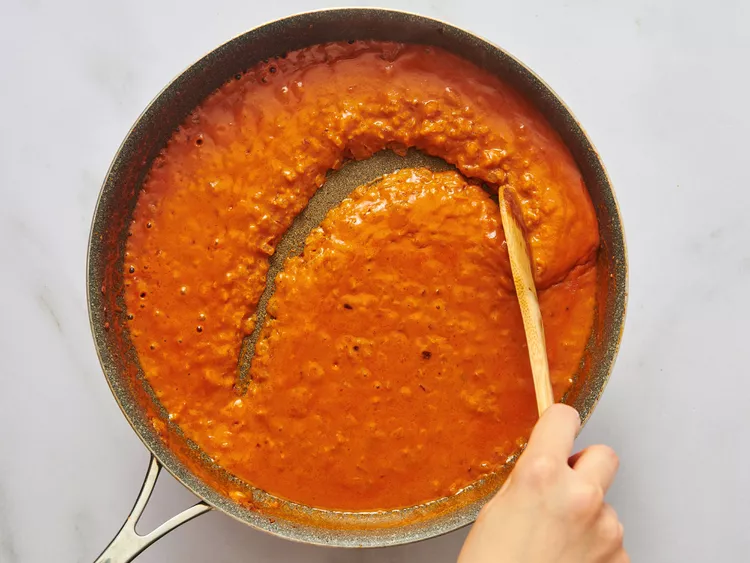
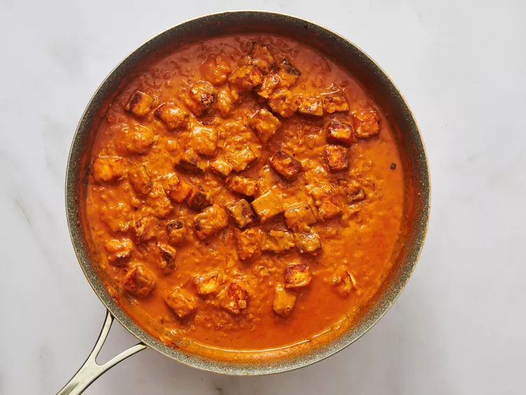

Paneer butter masala is a delicious rich and creamy vegetarian Indian curry. This recipe is easy to make at home in just 30 minutes with cubes of paneer, onions, cashews, and Indian spices in a buttery tomato sauce.
For 4 servings
Gather all ingredients.

Heat oil in a large skillet over medium heat; fry paneer in batches until golden, about 5 minutes.

Transfer fried paneer to a paper towel-lined plate to drain, retaining vegetable oil in skillet.

Melt butter in the same skillet over medium heat; cook and stir onion until golden brown, about 10 minutes.

Add ginger paste and garlic paste. Continue to cook until fragrant, about 1 minute more.

Stir cashews, ground red chiles, cumin, coriander, and garam masala into the onion mixture. Cook and stir for 1 minute.

Stir tomato sauce, half-and-half, milk, sugar, and salt into spice mixture; simmer until thickened, about 5 minutes.

Reduce heat to low. Add fried paneer and simmer until heated through, about 5 minutes more.
